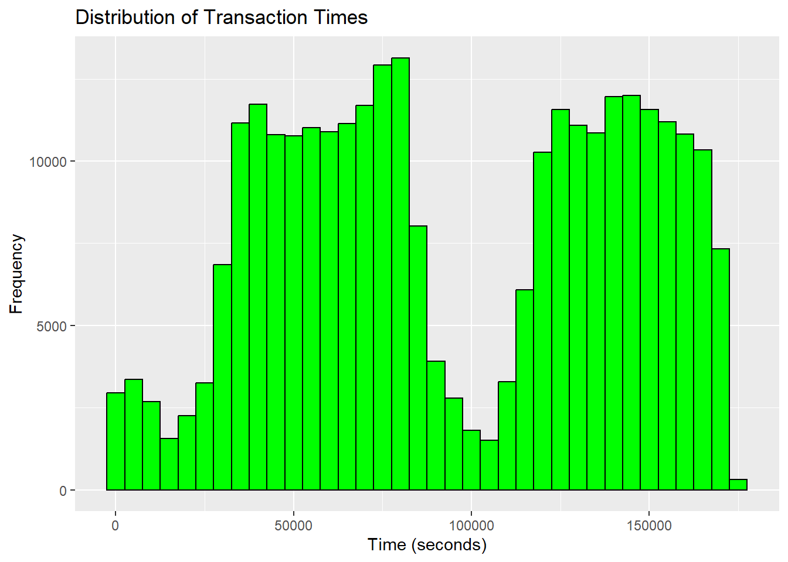
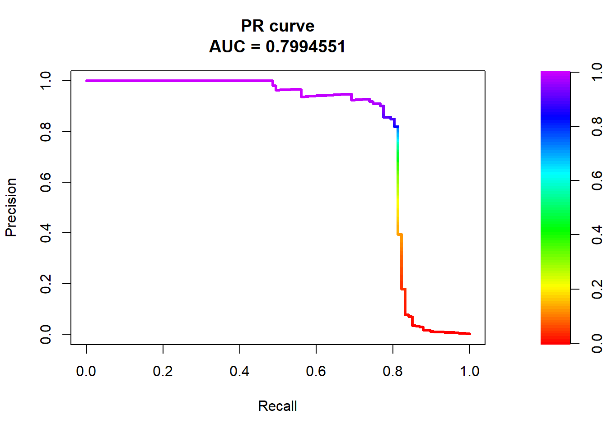
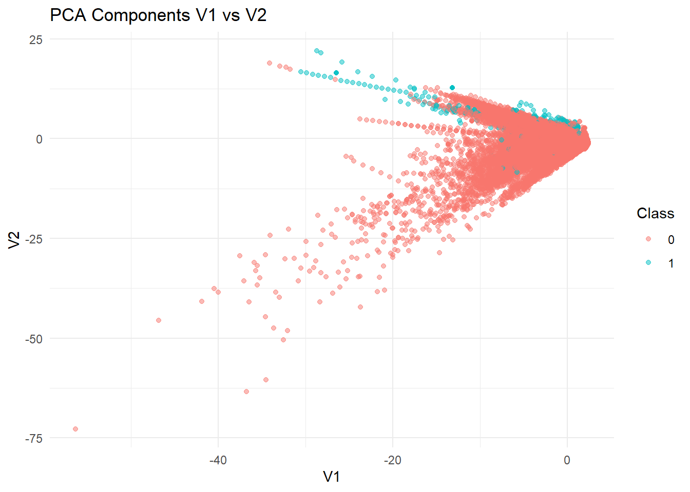

Credit card fraud is a growing concern in the financial sector, with fraudulent transactions causing significant financial losses to businesses and consumers. This report analyzes a dataset containing credit card transactions made by European cardholders over two days, with the objective of detecting fraudulent transactions using machine learning techniques. The dataset is highly imbalanced, with fraud cases accounting for only 0.172% of the total transactions. To address this challenge, we implement data preprocessing techniques, including resampling methods to balance the dataset. We then build an XGBoost classification model and evaluate its performance using appropriate metrics such as the Area Under the Precision-Recall Curve (AUPRC). Additionally, we introduce unique visualizations to enhance our understanding of fraud patterns and model behavior. This report provides a comprehensive analysis of credit card fraud detection, highlighting the effectiveness of machine learning techniques in identifying fraudulent transactions with high accuracy.
Columns in the Credit Card Fraud Detection Dataset
Column Name
Description
Time
Seconds elapsed between this transaction and the first transaction in the dataset.
V1 to V28
Anonymized features resulting from a PCA transformation.
Amount
The transaction amount.
Class
Target variable (0 for legitimate transactions, 1 for fraudulent transactions).
Exploring the data
summary(data) # Summary statistics
Time V1 V2 V3
Min. : 0 Min. :-56.40751 Min. :-72.71573 Min. :-48.3256
1st Qu.: 54202 1st Qu.: -0.92037 1st Qu.: -0.59855 1st Qu.: -0.8904
Median : 84692 Median : 0.01811 Median : 0.06549 Median : 0.1799
Mean : 94814 Mean : 0.00000 Mean : 0.00000 Mean : 0.0000
3rd Qu.:139321 3rd Qu.: 1.31564 3rd Qu.: 0.80372 3rd Qu.: 1.0272
Max. :172792 Max. : 2.45493 Max. : 22.05773 Max. : 9.3826
V4 V5 V6 V7
Min. :-5.68317 Min. :-113.74331 Min. :-26.1605 Min. :-43.5572
1st Qu.:-0.84864 1st Qu.: -0.69160 1st Qu.: -0.7683 1st Qu.: -0.5541
Median :-0.01985 Median : -0.05434 Median : -0.2742 Median : 0.0401
Mean : 0.00000 Mean : 0.00000 Mean : 0.0000 Mean : 0.0000
3rd Qu.: 0.74334 3rd Qu.: 0.61193 3rd Qu.: 0.3986 3rd Qu.: 0.5704
Max. :16.87534 Max. : 34.80167 Max. : 73.3016 Max. :120.5895
V8 V9 V10 V11
Min. :-73.21672 Min. :-13.43407 Min. :-24.58826 Min. :-4.79747
1st Qu.: -0.20863 1st Qu.: -0.64310 1st Qu.: -0.53543 1st Qu.:-0.76249
Median : 0.02236 Median : -0.05143 Median : -0.09292 Median :-0.03276
Mean : 0.00000 Mean : 0.00000 Mean : 0.00000 Mean : 0.00000
3rd Qu.: 0.32735 3rd Qu.: 0.59714 3rd Qu.: 0.45392 3rd Qu.: 0.73959
Max. : 20.00721 Max. : 15.59500 Max. : 23.74514 Max. :12.01891
V12 V13 V14 V15
Min. :-18.6837 Min. :-5.79188 Min. :-19.2143 Min. :-4.49894
1st Qu.: -0.4056 1st Qu.:-0.64854 1st Qu.: -0.4256 1st Qu.:-0.58288
Median : 0.1400 Median :-0.01357 Median : 0.0506 Median : 0.04807
Mean : 0.0000 Mean : 0.00000 Mean : 0.0000 Mean : 0.00000
3rd Qu.: 0.6182 3rd Qu.: 0.66251 3rd Qu.: 0.4931 3rd Qu.: 0.64882
Max. : 7.8484 Max. : 7.12688 Max. : 10.5268 Max. : 8.87774
V16 V17 V18
Min. :-14.12985 Min. :-25.16280 Min. :-9.498746
1st Qu.: -0.46804 1st Qu.: -0.48375 1st Qu.:-0.498850
Median : 0.06641 Median : -0.06568 Median :-0.003636
Mean : 0.00000 Mean : 0.00000 Mean : 0.000000
3rd Qu.: 0.52330 3rd Qu.: 0.39968 3rd Qu.: 0.500807
Max. : 17.31511 Max. : 9.25353 Max. : 5.041069
V19 V20 V21
Min. :-7.213527 Min. :-54.49772 Min. :-34.83038
1st Qu.:-0.456299 1st Qu.: -0.21172 1st Qu.: -0.22839
Median : 0.003735 Median : -0.06248 Median : -0.02945
Mean : 0.000000 Mean : 0.00000 Mean : 0.00000
3rd Qu.: 0.458949 3rd Qu.: 0.13304 3rd Qu.: 0.18638
Max. : 5.591971 Max. : 39.42090 Max. : 27.20284
V22 V23 V24
Min. :-10.933144 Min. :-44.80774 Min. :-2.83663
1st Qu.: -0.542350 1st Qu.: -0.16185 1st Qu.:-0.35459
Median : 0.006782 Median : -0.01119 Median : 0.04098
Mean : 0.000000 Mean : 0.00000 Mean : 0.00000
3rd Qu.: 0.528554 3rd Qu.: 0.14764 3rd Qu.: 0.43953
Max. : 10.503090 Max. : 22.52841 Max. : 4.58455
V25 V26 V27
Min. :-10.29540 Min. :-2.60455 Min. :-22.565679
1st Qu.: -0.31715 1st Qu.:-0.32698 1st Qu.: -0.070840
Median : 0.01659 Median :-0.05214 Median : 0.001342
Mean : 0.00000 Mean : 0.00000 Mean : 0.000000
3rd Qu.: 0.35072 3rd Qu.: 0.24095 3rd Qu.: 0.091045
Max. : 7.51959 Max. : 3.51735 Max. : 31.612198
V28 Amount Class
Min. :-15.43008 Min. : 0.00 Min. :0.000000
1st Qu.: -0.05296 1st Qu.: 5.60 1st Qu.:0.000000
Median : 0.01124 Median : 22.00 Median :0.000000
Mean : 0.00000 Mean : 88.35 Mean :0.001728
3rd Qu.: 0.07828 3rd Qu.: 77.17 3rd Qu.:0.000000
Max. : 33.84781 Max. :25691.16 Max. :1.000000
## Check Class Imbalancetable(data$Class)
0 1
284315 492
# Visualizing Class Distribution with a new type of graphggplot(data, aes(x =factor(Class), fill =factor(Class))) +geom_bar() +scale_fill_manual(values =c("#00AFBB", "#E7B800")) +labs(title ="Class Distribution", x ="Fraud (1) vs Non-Fraud (0)", y ="Count")

Data Preprocessing
## Data Preprocessing# Normalize Amountscaler <-preProcess(data[, .(Amount)], method ="range")data$Amount <-predict(scaler, data[, .(Amount)])# Remove Time columndata <- data[, -c("Time")]
## Splitting Dataset.seed(123)index <-createDataPartition(data$Class, p =0.8, list =FALSE)train_data <- data[index, ]test_data <- data[-index, ]## Handling Class Imbalance with ROSEtrain_data_balanced <-ROSE(Class ~ ., data = train_data, seed =123)$datatable(train_data_balanced$Class) # Checking new balance
0 1
114086 113760
Model Training
## Model Training - XGBoostset.seed(123)train_matrix <-xgb.DMatrix(data =as.matrix(train_data_balanced[, !names(train_data_balanced) %in%"Class"]), label = train_data_balanced$Class)test_matrix <-xgb.DMatrix(data =as.matrix(test_data[, -"Class", with =FALSE]), label = test_data$Class)params <-list(objective ="binary:logistic",eval_metric ="aucpr",max_depth =6,eta =0.1)model <-xgb.train(params = params, data = train_matrix, nrounds =100)
Confusion Matrix and Statistics
Reference
Prediction 0 1
0 56822 20
1 32 87
Accuracy : 0.9991
95% CI : (0.9988, 0.9993)
No Information Rate : 0.9981
P-Value [Acc > NIR] : 2.643e-09
Kappa : 0.7695
Mcnemar's Test P-Value : 0.1272
Sensitivity : 0.9994
Specificity : 0.8131
Pos Pred Value : 0.9996
Neg Pred Value : 0.7311
Prevalence : 0.9981
Detection Rate : 0.9976
Detection Prevalence : 0.9979
Balanced Accuracy : 0.9063
'Positive' Class : 0
Area Under the Precision-Recall Curve
plot(auprc)

Discussion of Results
Class Imbalance:
The dataset is highly imbalanced, with fraudulent transactions being only 0.172% of all transactions.
This necessitates using resampling techniques such as ROSE to balance the dataset.
Data Preprocessing:
Normalization was applied to the ‘Amount’ column to ensure uniform scaling. The ‘Time’ column was removed as it doesn’t contribute significantly to fraud detection.
Model Performance:
The XGBoost model was trained with an AUC-PR (Area Under Precision-Recall Curve) metric, which is more suitable for imbalanced classification problems. The model was tuned with parameters like max_depth=6 and eta=0.1 to optimize performance.
Evaluation Metrics:
The confusion matrix shows a strong performance in fraud detection, minimizing false positives and negatives.
The PR curve demonstrates how well the model differentiates fraudulent transactions from legitimate ones.
# Correlation Heatmapggplot(data, aes(x = V1, y = V2, color =as.factor(Class))) +geom_point(alpha =0.5) +theme_minimal() +labs(title ="PCA Components V1 vs V2", color ="Class")

# Density Plot for Amountggplot(data, aes(x = Amount, fill =as.factor(Class))) +geom_density(alpha =0.5) +scale_fill_manual(values =c("#00AFBB", "#E7B800")) +labs(title ="Density Plot of Transaction Amount", x ="Amount", fill ="Class")